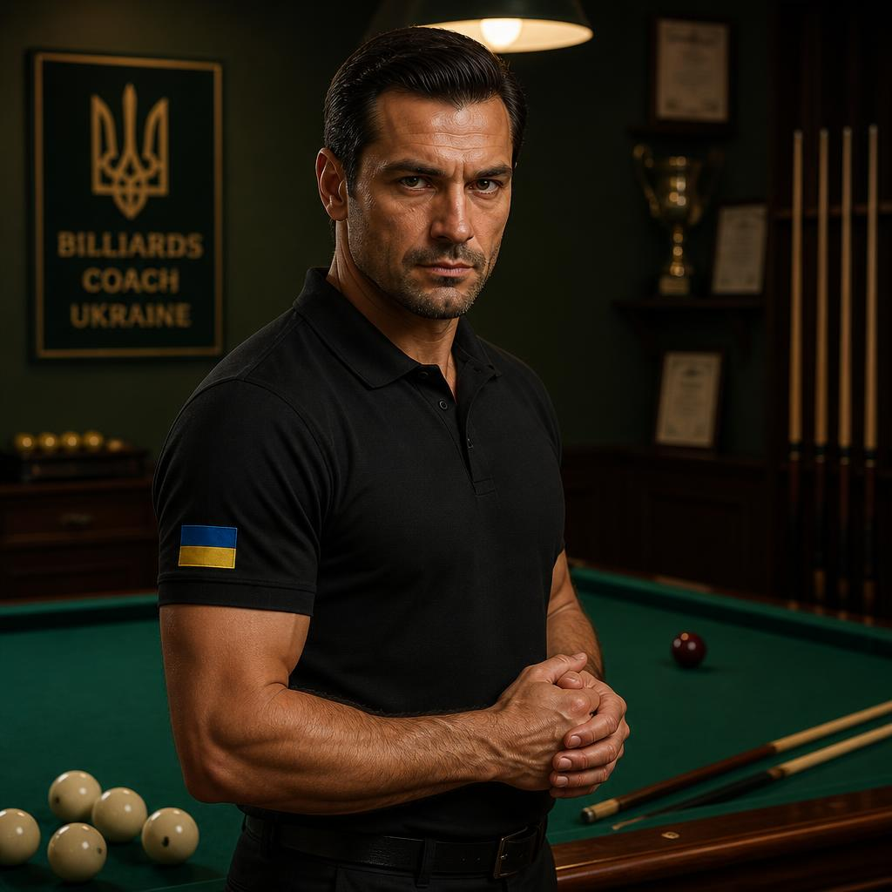
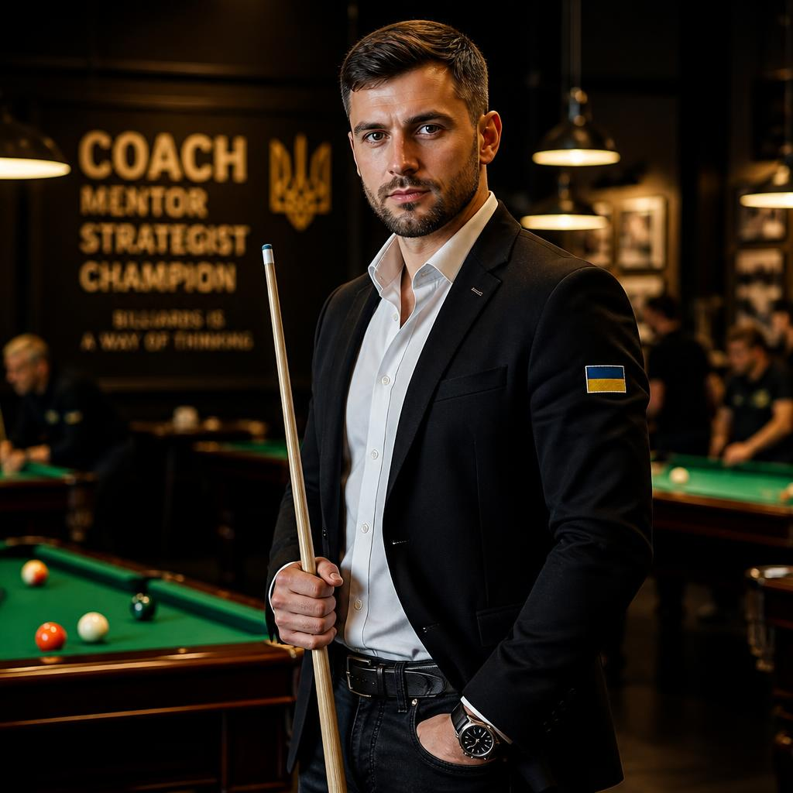
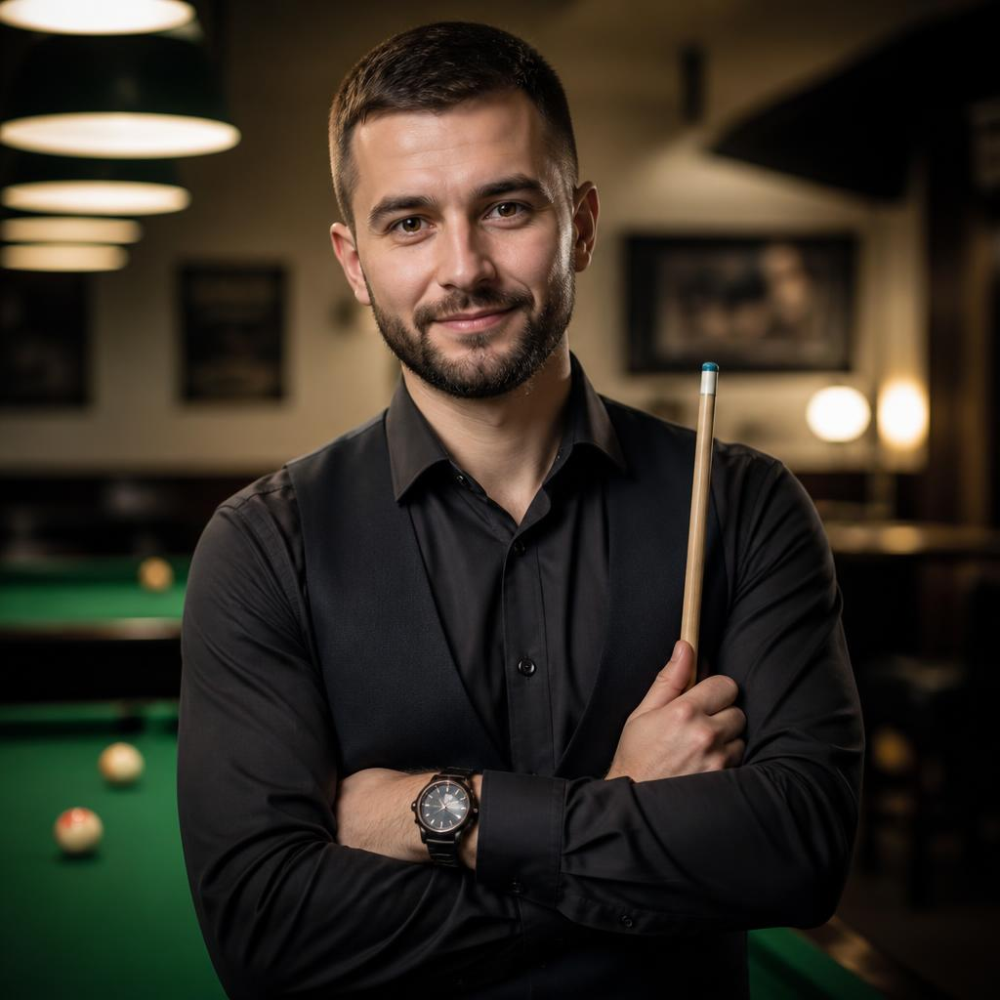
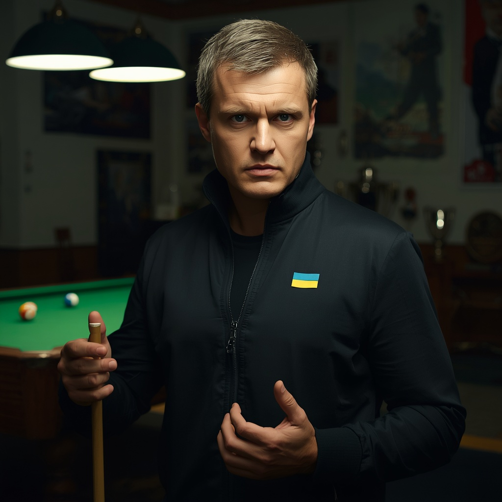
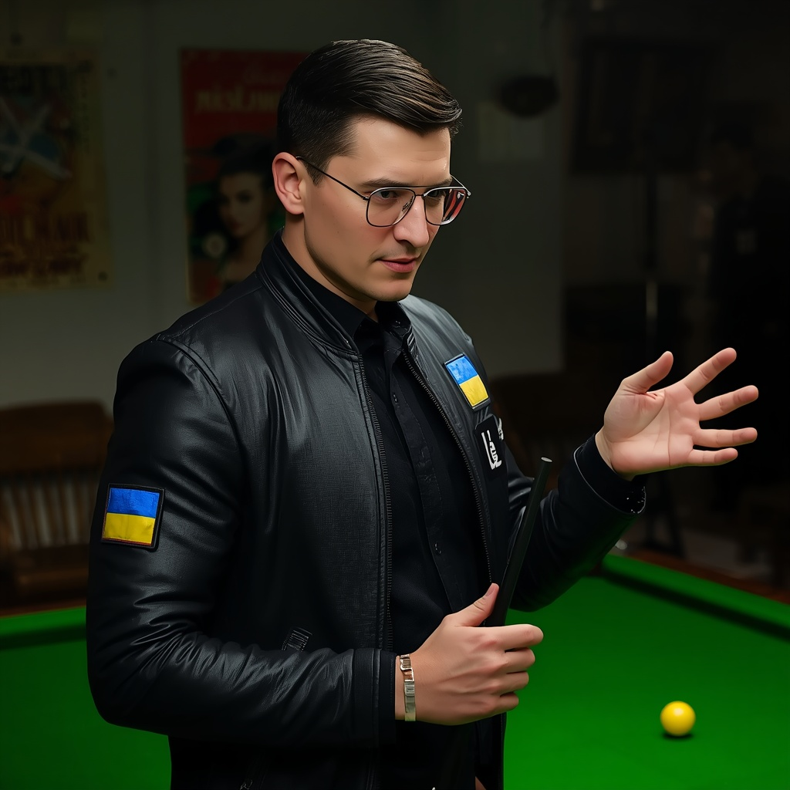

Більярд — інтелектуальний та витончений вид спорту, який зародився в Європі у XV столітті. Гра вимагає від спортсмена ідеального окоміру, математичного прорахунку кутів відскоку та залізного самоконтролю. Існує кілька всесвітньо відомих різновидів: американський пул, англійський снукер та класична піраміда. Найпрестижніші змагання: Чемпіонат світу зі снукеру в Крусівлі, турніри World Pool-Billiard Association (WPA) та Кубок Москоні. Найкращі майстри в історії — Ронні О'Салліван, Ефрен Реєс, Стівен Хендрі. Більярд чудово розвиває логіку, концентрацію та просторове мислення.


Правила Гра ведеться на спеціальному столі, обтягнутому сукном, за допомогою кия та куль. Головна мета — забити кулі у лузи відповідно до правил конкретної дисципліни. Усі удари виконуються виключно наклейкою кия по білій кулі (битку). Заборонено торкатися куль руками, одягом або іншими частинами кия під час розіграшу. Якщо гравець забиває прицільну кулю без порушень, він продовжує свою серію ударів. Порушення правил (фоли) караються передачею ходу супернику або наданням йому права на удар з будь-якого місця столу ("з руки").
Професіонали, які допоможуть вам досягти ідеального результату

Артур Чернов — Більярд. Досвід: 12 років. Спеціалізація: американський пул (9-ка та 8-ка), техніка правильної стійки, контроль сили удару. Досягнення: майстер спорту, дворазовий чемпіон України з пулу. Про себе: «Поставлю стабільний та рівний хід кия з нуля, навчу бачити прості та ефективні серії для швидкої перемоги».

Ілля Котов — Більярд. Досвід: 14 років. Спеціалізація: англійський снукер, побудова великих брейків (серій), складні відіграші. Досягнення: сертифікований тренер європейської асоціації снукеру, виховав чемпіона країни. Про себе: «Навчу прораховувати позицію на 3-4 ходи вперед і ювелірно контролювати рух битка по столу».

Едуард Малишев — Більярд. Досвід: 9 років. Спеціалізація: класична піраміда, свояки (удари своїм шаром), сильні силова удари з розбиття. Досягнення: призер кубка Східної Європи, майстер спорту. Про себе: «Розкрию секрети геометрії великих столів, навчу забивати надскладні кулі вздовж борту та тримати концентрацію».

Вадим Антонов — Більярд. Досвід: 5 років. Спеціалізація: початкова підготовка, базові гвинти (обертання кулі), психологія та тактика гри. Досягнення: дипломований спортивний інструктор, переможець міських ліг. Про себе: «Допоможу підібрати перший особистий кий, розберу всі мікропомилки у хваті та зроблю гру впевненою».

Родіон Сазонов — Більярд. Досвід: 7 років. Спеціалізація: дитячі та юніорські групи, координація рухів, ігрові тактичні завдання. Досягнення: срібний призер молодіжного чемпіонату України, дитячий тренер-методист. Про себе: «Розвиваю логіку та точність у дітей через захоплюючі вправи біля столу, ставлю базу без перевантажень».